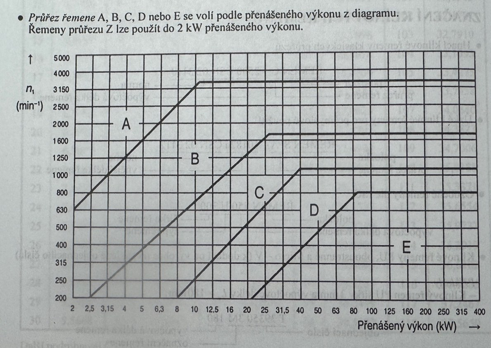

VÝPOČTOVÁ DÍLNA / 02
Řemenový převod
Změň zadání. Zvol součásti. Projdi výpočet krok za krokem.
● Zadání● Volba konstruktéra
TVŮJ NÁVRH
Otevřený řemenový převodPODKLAD Z EXCELU
Jak zvolit průřez řemene
V diagramu vyhledej přenášený výkon na vodorovné ose a otáčky malé řemenice na svislé ose. Obě osy mají nelineární stupnici. V místě průsečíku odečti oblast průřezu; na hranici ověř obě varianty v příslušných tabulkách.

Výběr průřezu sám neurčuje výkon jednoho řemene. N₀, Cα a Cₗ zadej podle tabulek pro konkrétní řemen, otáčky, průměr, opásání a délku. Tabulky ze stran 634–635 nejsou součástí souboru. Zde se jejich hodnoty automaticky neodhadují.
DOHLEDATELNOST
Co se oproti Excelu mění
Výchozí zadání i ruční volby jsou převzaté beze změny. Výpočty níže používají opravené vztahy. Původní vzorce a uložené výsledky zůstávají v porovnání.